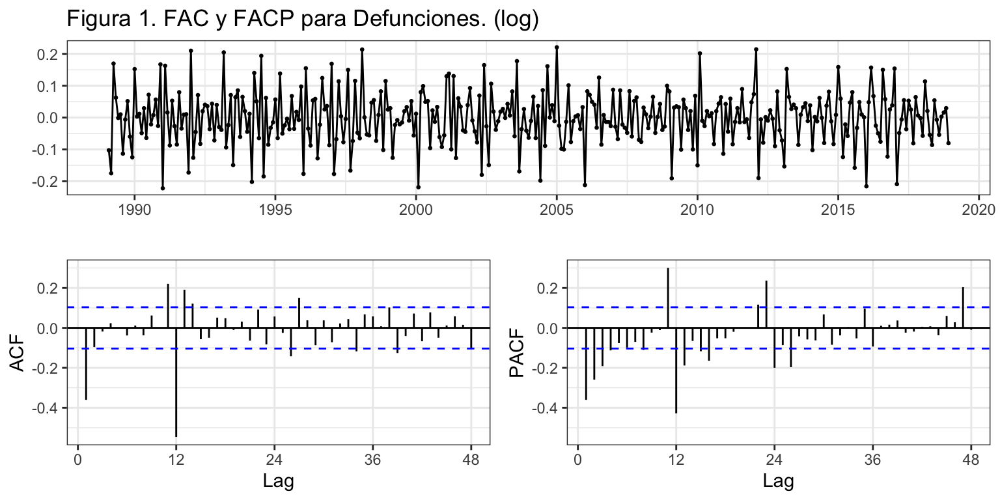
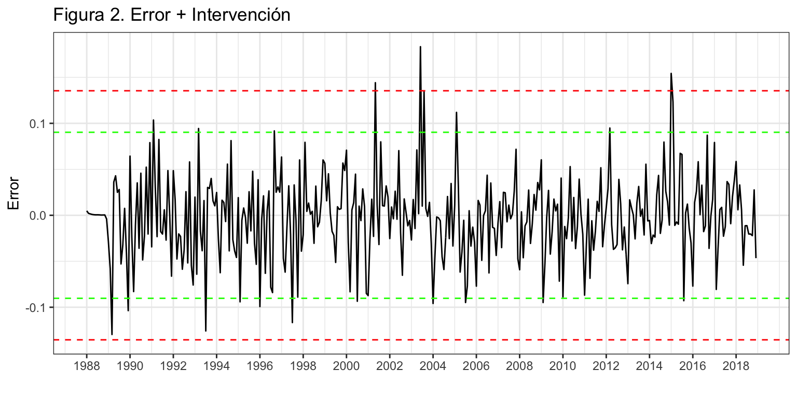
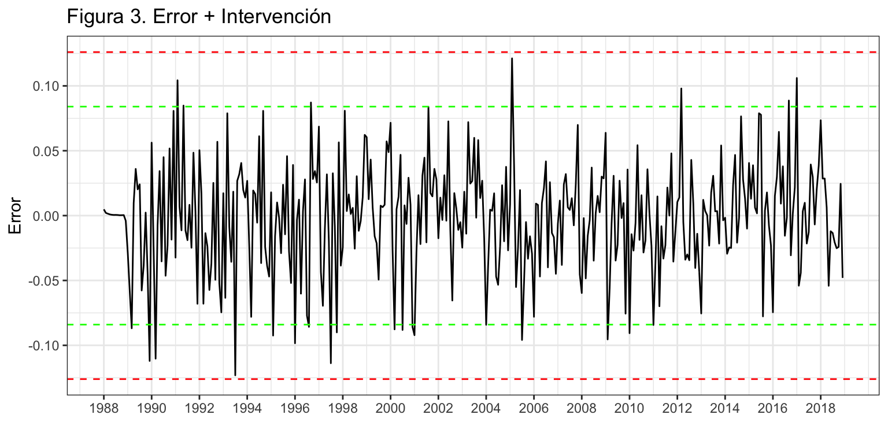
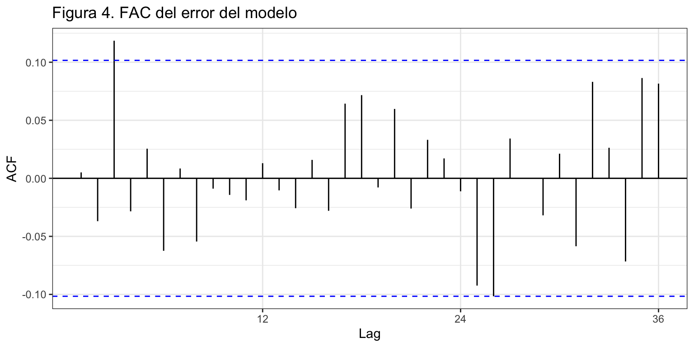
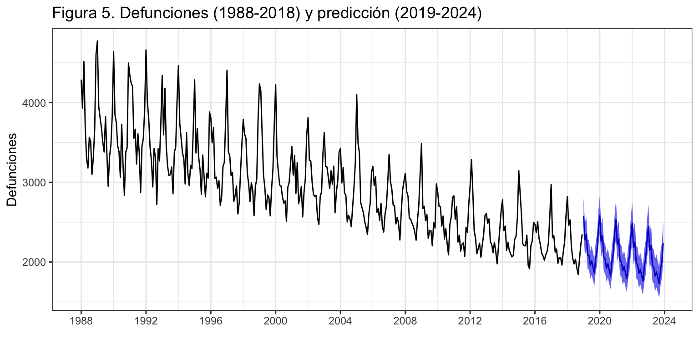
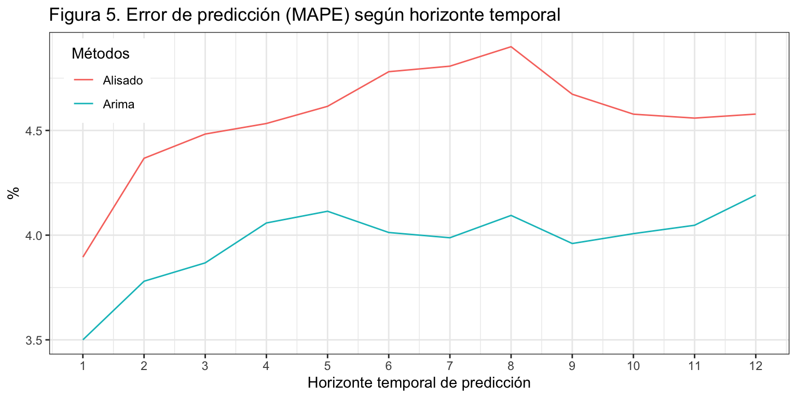

Ejemplo de aplicación: Defunciones por Enfermedades Cerebrovasculares (continuación).
Introducción
Consideremos de nuevo la serie temporal correspondiente al número de defunciones causadas por enfermedades cerebrovasculares, Esta serie está disponible en el Instituto Nacional de Estadística desde enero de 1980 hasta diciembre de 2018, un total de 39 años o 468 meses
En la descriptiva del tema 1 vimos que la descomposición revelaba la presencia de varios valores atípicos concentrados al inicio de la serie. Por este motivo, para su análisis por modelos ARIMA vamos a recortar la serie, que empezará el enero de 1988.
Además, en el tema 3 vimos que para alcanzar la estacionariedad y verificar la hipótesis de ergodicidad era necesario diferenciar la serie tanto en la parte regular como estacional y decidimos usar la transformación logarítmica para linealizar la serie y ganar en interpretabilidad.
Identificación
Vamos a identificar los valores de \(p\), \(q\), \(P\) y \(Q\). Para ello, analizaremos la FAC y la FACP, y solicitaremos con auto.arima y seas una identificación automática, en el primer caso incluyendo un efecto calendario para febreros bisiestos y otras variables ficticias para los tres valores atípicos identificados en el tema 2: febrero de 1999, enero de 2005 y febrero de 2012. La descriptiva realizada en el tema 1 revelaba que las muertes por enfermedades cerebrobasculares está poco relacionada con el número de días del mes y más con la estación del año.

En la parte regular la FAC muestra una autocorrelación por encima del IC (\(r_1\)) y en la FACP se observa decrecimiento. En la parte estacional, la FAC muestra una autocorrelación significativa (\(r_{12}\)) y la FACP muestra decrecimiento. Así, podemos identificar el proceso como \(log(DefEnfCer_t) \sim ARIMA_{12}(0,1,1)(0,1,1)\).
Veamos ahora auto.arima
Series: DefEnfCer
Regression with ARIMA(1,1,1)(1,1,2)[12] errors
Box Cox transformation: lambda= 0
Coefficients:
ar1 ma1 sar1 sma1 sma2 Bisiestos d0299 d0105
0.2370 -0.9368 -0.0764 -0.9542 0.1066 -0.0042 0.1861 0.1138
s.e. 0.0601 0.0237 0.2475 0.2460 0.2190 0.0184 0.0427 0.0424
d0212
0.2088
s.e. 0.0446
sigma^2 estimated as 0.002164: log likelihood=586.19
AIC=-1152.39 AICc=-1151.75 BIC=-1113.55
La función auto.arima identifica un proceso \(ARIMA_{12}(1,1,1)(1,1,2)\), donde el coeficiente \(\theta_{24}\) claramente no es significativo, así como la intervención para años bisiestos. Eliminados estos coeficientes no significativos, se tiene la identificación alcanzada por seas, un proceso \(ARIMA_{12}(1,1,1)(1,1,1)\), con dos intervenciones en febrero de 1999 y 2012.
Call:
seas(x = DefEnfCer)
Coefficients:
Estimate Std. Error z value Pr(>|z|)
AO1999.Feb 0.18751 0.04205 4.459 0.00000825 ***
AO2012.Feb 0.20692 0.04231 4.891 0.00000100 ***
AR-Nonseasonal-01 0.25258 0.05573 4.532 0.00000583 ***
AR-Seasonal-12 -0.19962 0.05529 -3.611 0.000305 ***
MA-Nonseasonal-01 0.93923 0.02055 45.700 < 0.0000000000000002 ***
MA-Seasonal-12 0.84122 0.03026 27.800 < 0.0000000000000002 ***
---
Signif. codes: 0 '***' 0.001 '**' 0.01 '*' 0.05 '.' 0.1 ' ' 1
SEATS adj. ARIMA: (1 1 1)(1 1 1) Obs.: 372 Transform: log
AICc: 4560, BIC: 4587 QS (no seasonality in final): 0
Box-Ljung (no autocorr.): 19.56 Shapiro (normality): 0.9848 ***
Vamos a partir de la identificación obtenida a seas y auto.arima (eliminando los coeficientes no significativos): \(log(DefEnfCer) \sim ARIMA_{12}(1,1,1)(1,1,1) + AI\).
Estimación
La siguiente salida muestra el modelo estimado y la figura 2 permite analizar la presencia de más valores extremos.
DefEnfCerArima1 <- Arima(DefEnfCer,
order = c(1, 1, 1),
seasonal = list(order = c(1, 1, 1), period = 12),
lambda = 0,
xreg = cbind(d0299, d0105, d0212))
DefEnfCerArima1
Series: DefEnfCer
Regression with ARIMA(1,1,1)(1,1,1)[12] errors
Box Cox transformation: lambda= 0
Coefficients:
ar1 ma1 sar1 sma1 d0299 d0105 d0212
0.2411 -0.9389 -0.1885 -0.8372 0.1868 0.1144 0.2066
s.e. 0.0595 0.0231 0.0616 0.0391 0.0427 0.0424 0.0424
sigma^2 estimated as 0.002152: log likelihood=586.04
AIC=-1156.07 AICc=-1155.66 BIC=-1125.01
error <- residuals(DefEnfCerArima1)
sderror <- sd(error)
autoplot(error, series="Error",
colour = "black",
xlab = "",
ylab = "Error",
main = "Figura 2. Error + Intervención") +
geom_hline(yintercept = c(-3, -2, 2, 3)*sderror,
colour = c("red", "green", "green", "red"),
lty = 2) +
scale_x_continuous(breaks= seq(1988, 2018, 2))

Se observan tres valores claramente atípicos en mayo de 2001, junio de 2003 y enero de 2015. Además, hay otros candidatos a valor extremo, entre los que destacan marzo de 1989 y agosto de 2003. Procederemos a incluirlos en el modelo. Además, vamos a incluir febrero de 2015 que en una segunda ronda de análisis del residuo supera las las tres desviaciones típicas.
d0501 <- 1*(cycle(DefEnfCer) == 5 & trunc(time(DefEnfCer)) == 2001)
d0603 <- 1*(cycle(DefEnfCer) == 6 & trunc(time(DefEnfCer)) == 2003)
d0115 <- 1*(cycle(DefEnfCer) == 1 & trunc(time(DefEnfCer)) == 2015)
d0215 <- 1*(cycle(DefEnfCer) == 2 & trunc(time(DefEnfCer)) == 2015)
d0389 <- 1*(cycle(DefEnfCer) == 3 & trunc(time(DefEnfCer)) == 1989)
d0803 <- 1*(cycle(DefEnfCer) == 8 & trunc(time(DefEnfCer)) == 2003)
DefEnfCerArima2 <- Arima(DefEnfCer,
order = c(1, 1, 1),
seasonal = list(order = c(1, 1, 1), period = 12),
lambda = 0,
xreg = cbind(d0299, d0105, d0215, d0212, d0501, d0603, d0115, d0389, d0803))
DefEnfCerArima2
Series: DefEnfCer
Regression with ARIMA(1,1,1)(1,1,1)[12] errors
Box Cox transformation: lambda= 0
Coefficients:
ar1 ma1 sar1 sma1 d0299 d0105 d0215 d0212 d0501
0.2103 -0.9418 -0.1609 -0.8270 0.1906 0.1244 0.1493 0.2216 0.1122
s.e. 0.0602 0.0216 0.0639 0.0391 0.0402 0.0400 0.0413 0.0402 0.0393
d0603 d0115 d0389 d0803
0.1511 0.1148 -0.0742 0.1477
s.e. 0.0396 0.0414 0.0412 0.0400
sigma^2 estimated as 0.001897: log likelihood=612.4
AIC=-1196.81 AICc=-1195.59 BIC=-1142.44
Aparentemente las variables de intervención incluidas son significativas. Este hecho lo contrastaremos más adelante. Por otro lado, ningún coeficiente del proceso Arima indica que este sea no estacionario o no invertible. Puedes obtener gráficamente el inverso de la raíces de los polinomios característicos (que deben caer dentro del círculo unidad) con plot(DefEnfCerArima2).
Por otro lado, el análisis gráfico del residuo indica que aún hay candidatos a valores atípicos. Aunque ninguno alcanza las tres desviaciones típicas, al menos dos de ellos están muy cerca. Sin embargo, vamos a dar por concluido este proceso.
error <- residuals(DefEnfCerArima2)
sderror <- sd(error)
autoplot(error, series="Error",
colour = "black",
xlab = "",
ylab = "Error",
main = "Figura 3. Error + Intervención") +
geom_hline(yintercept = c(-3, -2, 2, 3)*sderror,
colour = c("red", "green", "green", "red"),
lty = 2) +
scale_x_continuous(breaks= seq(1988, 2018, 2))

Por último, veamos si todos los coeficientes del modelo son significativos. Aunque el coeficiente del efecto de marzo de 1989 no lo es al 5%, si lo es al 10% así que optamos por dejarlo.
Coeficiente: ar1 valor de p: 0.0005
Coeficiente: ma1 valor de p: 0.0000
Coeficiente: sar1 valor de p: 0.0118
Coeficiente: sma1 valor de p: 0.0000
Coeficiente: d0299 valor de p: 0.0000
Coeficiente: d0105 valor de p: 0.0019
Coeficiente: d0215 valor de p: 0.0003
Coeficiente: d0212 valor de p: 0.0000
Coeficiente: d0501 valor de p: 0.0043
Coeficiente: d0603 valor de p: 0.0001
Coeficiente: d0115 valor de p: 0.0056
Coeficiente: d0389 valor de p: 0.0714
Coeficiente: d0803 valor de p: 0.0002
Validación
Analizando los criterios de bondad de ajuste se tiene que: el error medio (ME) -6.85 es prácticamente cero por lo que no parece que haya sesgo en las predicciones; en media nos equivocamos en 133 defunciones (RMSE) y el error porcentual medio es 3.2%, muy bajo.
ME RMSE MAE MPE MAPE MASE ACF1
Training set -6.85 132.84 97.7 -0.29 3.25 0.57 -0.01
Incorrelación, Homocedasticidad y Normalidad
Veamos ahora si el residuo es ruido blanco.
Box-Ljung test
data: error
X-squared = 0.52222, df = 2, p-value = 0.7702
Box-Ljung test
data: error
X-squared = 15.98, df = 24, p-value = 0.8888
Box-Ljung test
data: error^2
X-squared = 0.76947, df = 2, p-value = 0.6806
Box-Ljung test
data: error^2
X-squared = 26.74, df = 24, p-value = 0.3167
Jarque Bera Test
data: error
X-squared = 1.9989, df = 2, p-value = 0.3681

El error muestra ser incorrelado, homocedástico y seguir una distribución normal.
Ecuación del modelo identificado
Ahora que ya hemos dado por válido el modelo, veamos cuál es su ecuación e interpretación.
El modelo teórico es \[(1 - \phi_1 L)(1 - \phi_{12}L^{12})(1-L)(1-L^{12})log(DefEnfCer_t) =(1+\theta_1 L)(1 + \theta_{12}L^{12})\varepsilon_t +AI.\] Debido a la complejidad del modelo, no vamos a desarrollarlo ni interpretarlo.
Predicción de las defunciones por enfermedad cerebrovascular
Una vez dado por válido el modelo, podemos pasar a realizar predicciones para los próximos años. Como la variables de intervención no son efectos calendario sus valores previstos serán cero.
pDefEnfCerArima2 <- forecast(DefEnfCerArima2,
h = 60,
xreg = cbind(rep(0, 60), rep(0, 60), rep(0 ,60),
rep(0, 60), rep(0, 60), rep(0, 60),
rep(0, 60), rep(0, 60), rep(0, 60)),
level = 95)
autoplot(pDefEnfCerArima2,
xlab = "",
ylab = 'Defunciones',
main = 'Figura 5. Defunciones (1988-2018) y predicción (2019-2024)') +
scale_x_continuous(breaks= seq(1988, 2024, 4))

Comparación con Alisado Exponencial
El método de Alisado exponencial, aplicado sobre el logaritmo de las defunciones identifica un proceso (A,A,A) con \(\alpha=0.18\) y \(\beta = \gamma = 0\). La raíz del error cuadrático medio (RMSE) es de 159 casos y el error porcentual (MAPE) del 3.7%. Estos valores son algo superiores a los obtenidos con el modelo Arima (133 y 3.2%, respectivamente).
ETS(A,A,A)
Call:
ets(y = DefEnfCer, lambda = 0)
Box-Cox transformation: lambda= 0
Smoothing parameters:
alpha = 0.1764
beta = 0.0001
gamma = 0.0001
Initial states:
l = 8.2094
b = -0.0015
s = 0.1293 -0.0094 -0.0463 -0.1695 -0.0921 -0.0536
-0.0996 -0.0372 -0.0225 0.0957 0.0939 0.2113
sigma: 0.0505
AIC AICc BIC
-1.6107137 0.1180998 65.0104818
Training set error measures:
ME RMSE MAE MPE MAPE MASE ACF1
Training set 4.516472 158.6233 113.1012 -0.1049242 3.683735 0.659023 0.1622008
Para determinar si la aplicación de modelos Arima mejora sustancialmente la calidad de las predicciones, vamos a aplicar la metodología de origen de predicción móvil para estimar la capacidad predictiva del modelo Arima y compararla con el modelo de Alisado.
k <- 120
h <- 12
T <- length(DefEnfCer)
s<-T - k - h
mapeArima <- matrix(NA, s, h)
mapeAlisado <- matrix(NA, s, h)
X <- cbind(d0299, d0105, d0215, d0212, d0501, d0603, d0115, d0389, d0803)
for (i in 0:s) {
train.set <- subset(DefEnfCer, start = i + 1, end = i + k)
test.set <- subset(DefEnfCer, start = i + k + 1, end = i + k + h)
X.train <- X[(i + 1):(i + k),]
hay <- colSums(X.train)
X.train <- X.train[, hay>0]
X.test <- X[(i + k + 1):(i + k + h),]
X.test <- X.test[, hay>0]
if (length(X.train) > 0) {
fit <- try(Arima(train.set,
order = c(1, 1, 1),
seasonal = list(order = c(1, 1, 1), period = 12),
lambda = 0,
xreg=X.train), silent = TRUE)} else {
fit <- try(Arima(train.set,
order = c(1, 1, 1),
seasonal = list(order = c(1, 1, 1), period = 12),
lambda = 0), silent = TRUE)
}
if (!is.element("try-error", class(fit))) {
if (length(X.train) > 0) fcast <- forecast(fit, h = h, xreg = X.test) else
fcast <- forecast(fit, h = h)
mapeArima[i,] <- 100*abs(test.set - fcast$mean)/test.set
}
fit <- ets(train.set, lambda = 0, model = "AAA", damped = FALSE)
fcast<-forecast(fit, h = h)
mapeAlisado[i,] <- 100*abs(test.set - fcast$mean)/test.set
}
errorArima <- colMeans(mapeArima, na.rm = TRUE)
errorArima
[1] 3.505750 3.762524 3.873373 4.062654 4.125691 4.023479 3.999631 4.094851
[9] 3.976554 4.024579 4.055253 4.178740
[1] 3.897572 4.356373 4.484039 4.539895 4.629398 4.792687 4.821116 4.908862
[9] 4.685012 4.591513 4.568117 4.564475

La figura 6 revela que Arima siempre es superior a Alisado en calidad de predicciones, con un error porcentual inferior entre 4 y 8 décimas según el horizonte temporal. Además, en el modelo Arima para horizontes de predicción superiores a 4 meses el error se mantiene prácticamente constante.
LS0tCnRpdGxlOiAiU2VyaWVzIFRlbXBvcmFsZXM6IFByb2Nlc29zIEFSSU1BIGNvbiBlc3RhY2lvbmFsaWRhZCIKYXV0aG9yOiAiSXbDoW4gQXJyaWJhcyAoRGVwdG8uIEFuw6FsaXNpcyBFY29uw7NtaWNvLiBVbml2ZXJzaXRhdCBkZSBWYWzDqG5jaWEpIgpkYXRlOiAiQ3Vyc28gMjAyMC0yMSIKb3V0cHV0OiAKICBodG1sX2RvY3VtZW50OgogICAgdGhlbWU6IGNlcnVsZWFuCiAgICBoaWdobGlnaHQ6IHB5Z21lbnRzIAogICAgZmlnX2NhcHRpb246IGZhbHNlCiAgICBkZl9wcmludDoga2FibGUKICAgIHRvYzogdHJ1ZQogICAgdG9jX2RlcHRoOiAyCiAgICB0b2NfZmxvYXQ6IAogICAgICBjb2xsYXBzZWQ6IHRydWUKICAgIG51bWJlcl9zZWN0aW9uczogdHJ1ZQogICAgc2VsZl9jb250YWluZWQ6IHRydWUKICAgIGNvZGVfZG93bmxvYWQ6IHRydWUKLS0tCgpgYGB7ciBjaHVua19zZXR1cCwgZWNobyA9IEZBTFNFfQprbml0cjo6b3B0c19jaHVuayRzZXQod2FybmluZyA9IEZBTFNFLCAKICAgICAgICAgICAgICAgICAgICAgIG1lc3NhZ2UgPSBGQUxTRSwgCiAgICAgICAgICAgICAgICAgICAgICBjb21tZW50ID0gIiIsCiAgICAgICAgICAgICAgICAgICAgICBmaWcuYWxpZ24gPSAiY2VudGVyIiwgCiAgICAgICAgICAgICAgICAgICAgICBmaWcuc2hvdyA9ICJob2xkIiwKICAgICAgICAgICAgICAgICAgICAgIGZpZy5oZWlnaHQgPSA0LAogICAgICAgICAgICAgICAgICAgICAgZmlnLndpZHRoID0gOCwKICAgICAgICAgICAgICAgICAgICAgIG91dC53aWR0aCA9ICI4MCUiKSAKYGBgCgpgYGB7ciBvcHRpb25zX3NldHVwLCBlY2hvID0gRkFMU0V9Cm9wdGlvbnMoc2NpcGVuID0gOTk5KSAjLSBwYXJhIHF1aXRhciBsYSBub3RhY2lvbiBjaWVudGlmaWNhCmBgYAoKYGBge3IgbGlicmVyaWFzLCBlY2hvID0gRkFMU0V9CmxpYnJhcnkoIlJDb2xvckJyZXdlciIpCmxpYnJhcnkoZm9yZWNhc3QpCmxpYnJhcnkoZ2dwbG90Mik7IHRoZW1lX3NldCh0aGVtZV9idygpKQpsaWJyYXJ5KGdyaWRFeHRyYSkKbGlicmFyeShncmlkKQojbGlicmFyeShzaGFwZSkKbGlicmFyeSh0c2VyaWVzKQpsaWJyYXJ5KGFvZCkKbGlicmFyeShzZWFzb25hbCkKYGBgCgpcClwKCiMgRWplbXBsbyBkZSBhcGxpY2FjacOzbjogRGVmdW5jaW9uZXMgcG9yIEVuZmVybWVkYWRlcyBDZXJlYnJvdmFzY3VsYXJlcyAoY29udGludWFjacOzbikuCgpcCgojIyBJbnRyb2R1Y2Npw7NuCgpDb25zaWRlcmVtb3MgZGUgbnVldm8gbGEgc2VyaWUgdGVtcG9yYWwgY29ycmVzcG9uZGllbnRlIGFsIG7Dum1lcm8gZGUgZGVmdW5jaW9uZXMgY2F1c2FkYXMgcG9yIGVuZmVybWVkYWRlcyBjZXJlYnJvdmFzY3VsYXJlcywgRXN0YSBzZXJpZSBlc3TDoSBkaXNwb25pYmxlIGVuIGVsIEluc3RpdHV0byBOYWNpb25hbCBkZSBFc3RhZMOtc3RpY2EgZGVzZGUgZW5lcm8gZGUgMTk4MCBoYXN0YSBkaWNpZW1icmUgZGUgMjAxOCwgdW4gdG90YWwgZGUgMzkgYcOxb3MgbyA0NjggbWVzZXMKCkVuIGxhIGRlc2NyaXB0aXZhIGRlbCB0ZW1hIDEgdmltb3MgcXVlIGxhIGRlc2NvbXBvc2ljacOzbiByZXZlbGFiYSBsYSBwcmVzZW5jaWEgZGUgdmFyaW9zIHZhbG9yZXMgYXTDrXBpY29zIGNvbmNlbnRyYWRvcyBhbCBpbmljaW8gZGUgbGEgc2VyaWUuIFBvciBlc3RlIG1vdGl2bywgcGFyYSBzdSBhbsOhbGlzaXMgcG9yIG1vZGVsb3MgQVJJTUEgdmFtb3MgYSByZWNvcnRhciBsYSBzZXJpZSwgcXVlIGVtcGV6YXLDoSBlbCBlbmVybyBkZSAxOTg4LgoKQWRlbcOhcywgZW4gZWwgdGVtYSAzIHZpbW9zIHF1ZSAgcGFyYSBhbGNhbnphciBsYSBlc3RhY2lvbmFyaWVkYWQgeSB2ZXJpZmljYXIgbGEgaGlww7N0ZXNpcyBkZSBlcmdvZGljaWRhZCBlcmEgbmVjZXNhcmlvIGRpZmVyZW5jaWFyIGxhIHNlcmllIHRhbnRvIGVuIGxhIHBhcnRlIHJlZ3VsYXIgY29tbyBlc3RhY2lvbmFsIHkgZGVjaWRpbW9zIHVzYXIgbGEgdHJhbnNmb3JtYWNpw7NuIGxvZ2Fyw610bWljYSBwYXJhIGxpbmVhbGl6YXIgbGEgc2VyaWUgeSBnYW5hciBlbiBpbnRlcnByZXRhYmlsaWRhZC4KCmBgYHtyfQpEZWZFbmZDZXIgPC0gcmVhZC5jc3YyKCIuL3Nlcmllcy9FbmZlcm1lZGFkZXMgY2VyZWJyb3Zhc2N1bGFyZXMuY3N2IiwgaGVhZGVyID0gVFJVRSkKRGVmRW5mQ2VyIDwtIHRzKERlZkVuZkNlclssMl0sIHN0YXJ0ID0gMTk4MCwgZnJlcSA9IDEyKQpEZWZFbmZDZXIgPC0gd2luZG93KERlZkVuZkNlciwgc3RhcnQgPSAxOTg4KQpgYGAKClwKCiMjIElkZW50aWZpY2FjacOzbgoKVmFtb3MgYSBpZGVudGlmaWNhciBsb3MgdmFsb3JlcyBkZSAkcCQsICRxJCwgJFAkIHkgJFEkLiBQYXJhIGVsbG8sIGFuYWxpemFyZW1vcyBsYSBGQUMgeSBsYSBGQUNQLCB5IHNvbGljaXRhcmVtb3MgY29uIGBhdXRvLmFyaW1hYCB5IGBzZWFzYCB1bmEgaWRlbnRpZmljYWNpw7NuIGF1dG9tw6F0aWNhLCBlbiBlbCBwcmltZXIgY2FzbyBpbmNsdXllbmRvIHVuIGVmZWN0byBjYWxlbmRhcmlvIHBhcmEgZmVicmVyb3MgYmlzaWVzdG9zIHkgb3RyYXMgdmFyaWFibGVzIGZpY3RpY2lhcyBwYXJhIGxvcyB0cmVzIHZhbG9yZXMgYXTDrXBpY29zIGlkZW50aWZpY2Fkb3MgZW4gZWwgdGVtYSAyOiBmZWJyZXJvIGRlIDE5OTksIGVuZXJvIGRlIDIwMDUgeSBmZWJyZXJvIGRlIDIwMTIuIExhIGRlc2NyaXB0aXZhIHJlYWxpemFkYSBlbiBlbCB0ZW1hIDEgcmV2ZWxhYmEgcXVlIGxhcyBtdWVydGVzIHBvciBlbmZlcm1lZGFkZXMgY2VyZWJyb2Jhc2N1bGFyZXMgZXN0w6EgcG9jbyByZWxhY2lvbmFkYSBjb24gZWwgbsO6bWVybyBkZSBkw61hcyBkZWwgbWVzIHkgbcOhcyBjb24gbGEgZXN0YWNpw7NuIGRlbCBhw7FvLgoKYGBge3J9IApnZ3RzZGlzcGxheShkaWZmKGRpZmYobG9nKERlZkVuZkNlciksIGxhZyA9IDEyKSksIGxhZyA9IDQ4LAogICAgICAgICAgICBtYWluID0gIkZpZ3VyYSAxLiBGQUMgeSBGQUNQIHBhcmEgRGVmdW5jaW9uZXMuIChsb2cpIikKYGBgCgpFbiBsYSBwYXJ0ZSByZWd1bGFyIGxhIEZBQyBtdWVzdHJhIHVuYSBhdXRvY29ycmVsYWNpw7NuIHBvciBlbmNpbWEgZGVsIElDICgkcl8xJCkgeSBlbiBsYSBGQUNQIHNlIG9ic2VydmEgZGVjcmVjaW1pZW50by4gRW4gbGEgcGFydGUgZXN0YWNpb25hbCwgbGEgRkFDIG11ZXN0cmEgdW5hIGF1dG9jb3JyZWxhY2nDs24gc2lnbmlmaWNhdGl2YSAoJHJfezEyfSQpIHkgbGEgRkFDUCBtdWVzdHJhIGRlY3JlY2ltaWVudG8uIEFzw60sIHBvZGVtb3MgaWRlbnRpZmljYXIgZWwgcHJvY2VzbyBjb21vICRsb2coRGVmRW5mQ2VyX3QpIFxzaW0gQVJJTUFfezEyfSgwLDEsMSkoMCwxLDEpJC4KClZlYW1vcyBhaG9yYSBgYXV0by5hcmltYWAKCmBgYHtyfQpCaXNpZXN0b3MgPC0gMSoobW9udGhkYXlzKERlZkVuZkNlcikgPT0gMjkpCgpkMDI5OSA8LSAxKihjeWNsZShEZWZFbmZDZXIpID09IDIgJiB0cnVuYyh0aW1lKERlZkVuZkNlcikpID09IDE5OTkpCmQwMTA1IDwtIDEqKGN5Y2xlKERlZkVuZkNlcikgPT0gMSAmIHRydW5jKHRpbWUoRGVmRW5mQ2VyKSkgPT0gMjAwNSkKZDAyMTIgPC0gMSooY3ljbGUoRGVmRW5mQ2VyKSA9PSAyICYgdHJ1bmModGltZShEZWZFbmZDZXIpKSA9PSAyMDEyKQoKYXV0by5hcmltYShEZWZFbmZDZXIsIGQgPSAxLCBEID0gMSwKICAgICAgICAgICBsYW1iZGEgPSAwLAogICAgICAgICAgIHhyZWcgPSBjYmluZChCaXNpZXN0b3MsIGQwMjk5LCBkMDEwNSwgZDAyMTIpKQpgYGAKCkxhIGZ1bmNpw7NuIGBhdXRvLmFyaW1hYCBpZGVudGlmaWNhIHVuIHByb2Nlc28gJEFSSU1BX3sxMn0oMSwxLDEpKDEsMSwyKSQsIGRvbmRlIGVsIGNvZWZpY2llbnRlICRcdGhldGFfezI0fSQgY2xhcmFtZW50ZSBubyBlcyBzaWduaWZpY2F0aXZvLCBhc8OtIGNvbW8gbGEgaW50ZXJ2ZW5jacOzbiBwYXJhIGHDsW9zIGJpc2llc3Rvcy4gRWxpbWluYWRvcyBlc3RvcyBjb2VmaWNpZW50ZXMgbm8gc2lnbmlmaWNhdGl2b3MsIHNlIHRpZW5lIGxhIGlkZW50aWZpY2FjacOzbiBhbGNhbnphZGEgcG9yIGBzZWFzYCwgdW4gcHJvY2VzbyAkQVJJTUFfezEyfSgxLDEsMSkoMSwxLDEpJCwgY29uIGRvcyBpbnRlcnZlbmNpb25lcyBlbiBmZWJyZXJvIGRlIDE5OTkgeSAyMDEyLgoKYGBge3J9CnN1bW1hcnkoc2VhcyhEZWZFbmZDZXIpKQpgYGAKCgpWYW1vcyBhIHBhcnRpciBkZSBsYSBpZGVudGlmaWNhY2nDs24gb2J0ZW5pZGEgYSBgc2Vhc2AgeSBgYXV0by5hcmltYWAgKGVsaW1pbmFuZG8gbG9zIGNvZWZpY2llbnRlcyBubyBzaWduaWZpY2F0aXZvcyk6ICRsb2coRGVmRW5mQ2VyKSBcc2ltIEFSSU1BX3sxMn0oMSwxLDEpKDEsMSwxKSArIEFJJC4KClwKCiMjIEVzdGltYWNpw7NuIAoKTGEgc2lndWllbnRlIHNhbGlkYSBtdWVzdHJhIGVsIG1vZGVsbyBlc3RpbWFkbyB5IGxhIGZpZ3VyYSAyIHBlcm1pdGUgYW5hbGl6YXIgbGEgcHJlc2VuY2lhIGRlIG3DoXMgdmFsb3JlcyBleHRyZW1vcy4KCmBgYHtyfQpEZWZFbmZDZXJBcmltYTEgPC0gQXJpbWEoRGVmRW5mQ2VyLCAKICAgICAgICAgICAgICAgICAgICAgICAgIG9yZGVyID0gYygxLCAxLCAxKSwgIAogICAgICAgICAgICAgICAgICAgICAgICAgc2Vhc29uYWwgPSBsaXN0KG9yZGVyID0gYygxLCAxLCAxKSwgcGVyaW9kID0gMTIpLAogICAgICAgICAgICAgICAgICAgICAgICAgbGFtYmRhID0gMCwKICAgICAgICAgICAgICAgICAgICAgICAgIHhyZWcgPSBjYmluZChkMDI5OSwgZDAxMDUsIGQwMjEyKSkKRGVmRW5mQ2VyQXJpbWExCmBgYCAKCgpgYGB7cn0gCmVycm9yIDwtIHJlc2lkdWFscyhEZWZFbmZDZXJBcmltYTEpCnNkZXJyb3IgPC0gc2QoZXJyb3IpCgphdXRvcGxvdChlcnJvciwgc2VyaWVzPSJFcnJvciIsCiAgICAgICAgIGNvbG91ciA9ICJibGFjayIsCiAgICAgICAgIHhsYWIgPSAiIiwKICAgICAgICAgeWxhYiA9ICJFcnJvciIsCiAgICAgICAgIG1haW4gPSAiRmlndXJhIDIuIEVycm9yICsgSW50ZXJ2ZW5jacOzbiIpICsKICBnZW9tX2hsaW5lKHlpbnRlcmNlcHQgPSBjKC0zLCAtMiwgMiwgMykqc2RlcnJvciwgCiAgICAgICAgICAgICBjb2xvdXIgPSBjKCJyZWQiLCAiZ3JlZW4iLCAiZ3JlZW4iLCAicmVkIiksIAogICAgICAgICAgICAgbHR5ID0gMikgKyAKICBzY2FsZV94X2NvbnRpbnVvdXMoYnJlYWtzPSBzZXEoMTk4OCwgMjAxOCwgMikpIApgYGAKU2Ugb2JzZXJ2YW4gdHJlcyB2YWxvcmVzIGNsYXJhbWVudGUgYXTDrXBpY29zIGVuIG1heW8gZGUgMjAwMSwganVuaW8gZGUgMjAwMyB5IGVuZXJvIGRlIDIwMTUuIEFkZW3DoXMsIGhheSBvdHJvcyBjYW5kaWRhdG9zIGEgdmFsb3IgZXh0cmVtbywgZW50cmUgbG9zIHF1ZSBkZXN0YWNhbiBtYXJ6byBkZSAxOTg5IHkgYWdvc3RvIGRlIDIwMDMuIFByb2NlZGVyZW1vcyBhIGluY2x1aXJsb3MgZW4gZWwgbW9kZWxvLiBBZGVtw6FzLCB2YW1vcyBhIGluY2x1aXIgZmVicmVybyBkZSAyMDE1IHF1ZSBlbiB1bmEgc2VndW5kYSByb25kYSBkZSBhbsOhbGlzaXMgZGVsIHJlc2lkdW8gc3VwZXJhIGxhcyBsYXMgdHJlcyBkZXN2aWFjaW9uZXMgdMOtcGljYXMuCgpgYGB7cn0KZDA1MDEgPC0gMSooY3ljbGUoRGVmRW5mQ2VyKSA9PSA1ICYgdHJ1bmModGltZShEZWZFbmZDZXIpKSA9PSAyMDAxKQpkMDYwMyA8LSAxKihjeWNsZShEZWZFbmZDZXIpID09IDYgJiB0cnVuYyh0aW1lKERlZkVuZkNlcikpID09IDIwMDMpCmQwMTE1IDwtIDEqKGN5Y2xlKERlZkVuZkNlcikgPT0gMSAmIHRydW5jKHRpbWUoRGVmRW5mQ2VyKSkgPT0gMjAxNSkKZDAyMTUgPC0gMSooY3ljbGUoRGVmRW5mQ2VyKSA9PSAyICYgdHJ1bmModGltZShEZWZFbmZDZXIpKSA9PSAyMDE1KQpkMDM4OSA8LSAxKihjeWNsZShEZWZFbmZDZXIpID09IDMgJiB0cnVuYyh0aW1lKERlZkVuZkNlcikpID09IDE5ODkpCmQwODAzIDwtIDEqKGN5Y2xlKERlZkVuZkNlcikgPT0gOCAmIHRydW5jKHRpbWUoRGVmRW5mQ2VyKSkgPT0gMjAwMykKCgpEZWZFbmZDZXJBcmltYTIgPC0gQXJpbWEoRGVmRW5mQ2VyLCAKICAgICAgICAgICAgICAgICAgICAgICAgIG9yZGVyID0gYygxLCAxLCAxKSwgIAogICAgICAgICAgICAgICAgICAgICAgICAgc2Vhc29uYWwgPSBsaXN0KG9yZGVyID0gYygxLCAxLCAxKSwgcGVyaW9kID0gMTIpLAogICAgICAgICAgICAgICAgICAgICAgICAgbGFtYmRhID0gMCwKICAgICAgICAgICAgICAgICAgICAgICAgIHhyZWcgPSBjYmluZChkMDI5OSwgZDAxMDUsIGQwMjE1LCBkMDIxMiwgZDA1MDEsIGQwNjAzLCBkMDExNSwgZDAzODksIGQwODAzKSkKRGVmRW5mQ2VyQXJpbWEyCmBgYCAKCkFwYXJlbnRlbWVudGUgbGFzIHZhcmlhYmxlcyBkZSBpbnRlcnZlbmNpw7NuIGluY2x1aWRhcyBzb24gc2lnbmlmaWNhdGl2YXMuIEVzdGUgaGVjaG8gbG8gY29udHJhc3RhcmVtb3MgbcOhcyBhZGVsYW50ZS4gUG9yIG90cm8gbGFkbywgbmluZ8O6biBjb2VmaWNpZW50ZSBkZWwgcHJvY2VzbyBBcmltYSBpbmRpY2EgcXVlIGVzdGUgc2VhIG5vIGVzdGFjaW9uYXJpbyBvIG5vIGludmVydGlibGUuIFB1ZWRlcyBvYnRlbmVyIGdyw6FmaWNhbWVudGUgZWwgaW52ZXJzbyBkZSBsYSByYcOtY2VzIGRlIGxvcyBwb2xpbm9taW9zIGNhcmFjdGVyw61zdGljb3MgKHF1ZSBkZWJlbiBjYWVyIGRlbnRybyBkZWwgY8OtcmN1bG8gdW5pZGFkKSBjb24gYHBsb3QoRGVmRW5mQ2VyQXJpbWEyKWAuCgpQb3Igb3RybyBsYWRvLCBlbCBhbsOhbGlzaXMgZ3LDoWZpY28gZGVsIHJlc2lkdW8gaW5kaWNhIHF1ZSBhw7puIGhheSBjYW5kaWRhdG9zIGEgdmFsb3JlcyBhdMOtcGljb3MuIEF1bnF1ZSBuaW5ndW5vIGFsY2FuemEgbGFzIHRyZXMgZGVzdmlhY2lvbmVzIHTDrXBpY2FzLCBhbCBtZW5vcyBkb3MgZGUgZWxsb3MgZXN0w6FuIG11eSBjZXJjYS4gU2luIGVtYmFyZ28sIHZhbW9zIGEgZGFyIHBvciBjb25jbHVpZG8gZXN0ZSBwcm9jZXNvLgoKYGBge3J9IAplcnJvciA8LSByZXNpZHVhbHMoRGVmRW5mQ2VyQXJpbWEyKQpzZGVycm9yIDwtIHNkKGVycm9yKQoKYXV0b3Bsb3QoZXJyb3IsIHNlcmllcz0iRXJyb3IiLAogICAgICAgICBjb2xvdXIgPSAiYmxhY2siLAogICAgICAgICB4bGFiID0gIiIsCiAgICAgICAgIHlsYWIgPSAiRXJyb3IiLAogICAgICAgICBtYWluID0gIkZpZ3VyYSAzLiBFcnJvciArIEludGVydmVuY2nDs24iKSArCiAgZ2VvbV9obGluZSh5aW50ZXJjZXB0ID0gYygtMywgLTIsIDIsIDMpKnNkZXJyb3IsIAogICAgICAgICAgICAgY29sb3VyID0gYygicmVkIiwgImdyZWVuIiwgImdyZWVuIiwgInJlZCIpLCAKICAgICAgICAgICAgIGx0eSA9IDIpICsgCiAgc2NhbGVfeF9jb250aW51b3VzKGJyZWFrcz0gc2VxKDE5ODgsIDIwMTgsIDIpKSAKYGBgClBvciDDumx0aW1vLCB2ZWFtb3Mgc2kgdG9kb3MgbG9zIGNvZWZpY2llbnRlcyBkZWwgbW9kZWxvIHNvbiBzaWduaWZpY2F0aXZvcy4gQXVucXVlIGVsIGNvZWZpY2llbnRlIGRlbCBlZmVjdG8gZGUgbWFyem8gZGUgMTk4OSBubyBsbyBlcyBhbCA1JSwgc2kgbG8gZXMgYWwgMTAlIGFzw60gcXVlIG9wdGFtb3MgcG9yIGRlamFybG8uCgpgYGB7cn0KZm9yKGkgaW4gMTpsZW5ndGgoY29lZihEZWZFbmZDZXJBcmltYTIpKSkgewogIHd0IDwtIHdhbGQudGVzdChiID0gY29lZihEZWZFbmZDZXJBcmltYTIpLCAKICAgICAgICAgICAgICAgICAgU2lnbWEgPSB2Y292KERlZkVuZkNlckFyaW1hMiksIAogICAgICAgICAgICAgICAgICBUZXJtcyA9IGkpCiAgY2F0KCJcbkNvZWZpY2llbnRlOiAiLCBuYW1lcyhjb2VmKERlZkVuZkNlckFyaW1hMikpW2ldLCAiXHR2YWxvciBkZSBwOiAiLCAKICAgICAgZm9ybWF0Qyh3dCRyZXN1bHQkY2hpMlszXSwgZGlnaXRzID0gNCwgZm9ybWF0ID0gImYiKSkKfQpgYGAKClwKCiMjIFZhbGlkYWNpw7NuCgpBbmFsaXphbmRvIGxvcyBjcml0ZXJpb3MgZGUgYm9uZGFkIGRlIGFqdXN0ZSBzZSB0aWVuZSBxdWU6IGVsIGVycm9yIG1lZGlvIChNRSkgYHIgcm91bmQoYWNjdXJhY3koRGVmRW5mQ2VyQXJpbWEyKVsxXSwyKWAgZXMgcHLDoWN0aWNhbWVudGUgY2VybyBwb3IgbG8gcXVlIG5vIHBhcmVjZSBxdWUgaGF5YSBzZXNnbyBlbiBsYXMgcHJlZGljY2lvbmVzOyBlbiBtZWRpYSBub3MgZXF1aXZvY2Ftb3MgZW4gYHIgcm91bmQoYWNjdXJhY3koRGVmRW5mQ2VyQXJpbWEyKVsyXSwwKWAgZGVmdW5jaW9uZXMgKFJNU0UpIHkgZWwgZXJyb3IgcG9yY2VudHVhbCBtZWRpbyBlcyBgciByb3VuZChhY2N1cmFjeShEZWZFbmZDZXJBcmltYTIpWzVdLDEpYCUsIG11eSBiYWpvLgoKYGBge3IsZXZhbD1GQUxTRX0KYWNjdXJhY3koRGVmRW5mQ2VyQXJpbWEyKQpgYGAKCmBgYHtyLGVjaG89RkFMU0V9CnJvdW5kKGFjY3VyYWN5KERlZkVuZkNlckFyaW1hMiksMikKYGBgCgpcCgpfX0luY29ycmVsYWNpw7NuLCBIb21vY2VkYXN0aWNpZGFkIHkgTm9ybWFsaWRhZF9fCgpWZWFtb3MgYWhvcmEgc2kgZWwgcmVzaWR1byBlcyBydWlkbyBibGFuY28uCgpgYGB7cn0KZ2dBY2YoZXJyb3IsIGxhZyA9IDM2LCBtYWluID0gIkZpZ3VyYSA0LiBGQUMgZGVsIGVycm9yIGRlbCBtb2RlbG8iKQpCb3gudGVzdChlcnJvciwgbGFnID0gMix0eXBlID0gIkxqdW5nLUJveCIpCkJveC50ZXN0KGVycm9yLCBsYWcgPSAyNCx0eXBlID0gIkxqdW5nLUJveCIpCkJveC50ZXN0KGVycm9yXjIsIGxhZyA9IDIsIHR5cGUgPSAiTGp1bmctQm94IikKQm94LnRlc3QoZXJyb3JeMiwgbGFnID0gMjQsIHR5cGUgPSAiTGp1bmctQm94IikKamFycXVlLmJlcmEudGVzdChlcnJvcikgCmBgYAoKRWwgZXJyb3IgbXVlc3RyYSBzZXIgaW5jb3JyZWxhZG8sIGhvbW9jZWTDoXN0aWNvIHkgc2VndWlyIHVuYSBkaXN0cmlidWNpw7NuIG5vcm1hbC4gCgpcCgojIyBFY3VhY2nDs24gZGVsIG1vZGVsbyBpZGVudGlmaWNhZG8KCkFob3JhIHF1ZSB5YSBoZW1vcyBkYWRvIHBvciB2w6FsaWRvIGVsIG1vZGVsbywgdmVhbW9zIGN1w6FsIGVzIHN1IGVjdWFjacOzbiBlIGludGVycHJldGFjacOzbi4gCgpFbCBfX21vZGVsbyB0ZcOzcmljb19fIGVzCiQkKDEgLSBccGhpXzEgTCkoMSAtIFxwaGlfezEyfUxeezEyfSkoMS1MKSgxLUxeezEyfSlsb2coRGVmRW5mQ2VyX3QpID0oMStcdGhldGFfMSBMKSgxICsgXHRoZXRhX3sxMn1MXnsxMn0pXHZhcmVwc2lsb25fdCArQUkuJCQKRGViaWRvIGEgbGEgY29tcGxlamlkYWQgZGVsIG1vZGVsbywgbm8gdmFtb3MgYSBkZXNhcnJvbGxhcmxvIG5pIGludGVycHJldGFybG8uCgpcCgojIyBQcmVkaWNjacOzbiBkZSBsYXMgZGVmdW5jaW9uZXMgcG9yIGVuZmVybWVkYWQgY2VyZWJyb3Zhc2N1bGFyCgpVbmEgdmV6IGRhZG8gcG9yIHbDoWxpZG8gZWwgbW9kZWxvLCBwb2RlbW9zIHBhc2FyIGEgcmVhbGl6YXIgcHJlZGljY2lvbmVzIHBhcmEgbG9zIHByw7N4aW1vcyBhw7Fvcy4gQ29tbyBsYSB2YXJpYWJsZXMgZGUgaW50ZXJ2ZW5jacOzbiBubyBzb24gZWZlY3RvcyBjYWxlbmRhcmlvIHN1cyB2YWxvcmVzIHByZXZpc3RvcyBzZXLDoW4gY2Vyby4KCmBgYHtyfQpwRGVmRW5mQ2VyQXJpbWEyIDwtIGZvcmVjYXN0KERlZkVuZkNlckFyaW1hMiwgCiAgICAgICAgICAgICAgICAgICAgICAgICAgICAgaCA9IDYwLAogICAgICAgICAgICAgICAgICAgICAgICAgICAgIHhyZWcgPSBjYmluZChyZXAoMCwgNjApLCByZXAoMCwgNjApLCByZXAoMCAsNjApLCAKICAgICAgICAgICAgICAgICAgICAgICAgICAgICAgICAgICAgICAgICAgcmVwKDAsIDYwKSwgcmVwKDAsIDYwKSwgcmVwKDAsIDYwKSwKICAgICAgICAgICAgICAgICAgICAgICAgICAgICAgICAgICAgICAgICAgcmVwKDAsIDYwKSwgcmVwKDAsIDYwKSwgcmVwKDAsIDYwKSksIAogICAgICAgICAgICAgICAgICAgICAgICAgICAgIGxldmVsID0gOTUpCmF1dG9wbG90KHBEZWZFbmZDZXJBcmltYTIsIAogICAgICAgICB4bGFiID0gIiIsCiAgICAgICAgIHlsYWIgPSAnRGVmdW5jaW9uZXMnLAogICAgICAgICBtYWluID0gJ0ZpZ3VyYSA1LiBEZWZ1bmNpb25lcyAoMTk4OC0yMDE4KSB5IHByZWRpY2Npw7NuICgyMDE5LTIwMjQpJykgKwogIHNjYWxlX3hfY29udGludW91cyhicmVha3M9IHNlcSgxOTg4LCAyMDI0LCA0KSkgCmBgYAoKXAoKIyMgQ29tcGFyYWNpw7NuIGNvbiBBbGlzYWRvIEV4cG9uZW5jaWFsCgpFbCBtw6l0b2RvIGRlIEFsaXNhZG8gZXhwb25lbmNpYWwsIGFwbGljYWRvIHNvYnJlIGVsIGxvZ2FyaXRtbyBkZSBsYXMgZGVmdW5jaW9uZXMgaWRlbnRpZmljYSB1biBwcm9jZXNvIChBLEEsQSkgY29uICRcYWxwaGE9MC4xOCQgeSAkXGJldGEgPSBcZ2FtbWEgPSAwJC4gTGEgcmHDrXogZGVsIGVycm9yIGN1YWRyw6F0aWNvIG1lZGlvIChSTVNFKSBlcyBkZSAxNTkgY2Fzb3MgeSBlbCBlcnJvciBwb3JjZW50dWFsIChNQVBFKSBkZWwgMy43JS4gRXN0b3MgdmFsb3JlcyBzb24gYWxnbyBzdXBlcmlvcmVzIGEgbG9zIG9idGVuaWRvcyBjb24gZWwgbW9kZWxvIEFyaW1hICgxMzMgeSAzLjIlLCByZXNwZWN0aXZhbWVudGUpLgoKYGBge3J9CnN1bW1hcnkoZXRzKERlZkVuZkNlciwgbGFtYmRhID0gMCkpCmBgYAoKUGFyYSBkZXRlcm1pbmFyIHNpIGxhIGFwbGljYWNpw7NuIGRlIG1vZGVsb3MgQXJpbWEgbWVqb3JhIHN1c3RhbmNpYWxtZW50ZSBsYSBjYWxpZGFkIGRlIGxhcyBwcmVkaWNjaW9uZXMsIHZhbW9zIGEgYXBsaWNhciBsYSBtZXRvZG9sb2fDrWEgZGUgb3JpZ2VuIGRlIHByZWRpY2Npw7NuIG3Ds3ZpbCBwYXJhIGVzdGltYXIgbGEgY2FwYWNpZGFkIHByZWRpY3RpdmEgZGVsIG1vZGVsbyBBcmltYSB5IGNvbXBhcmFybGEgY29uIGVsIG1vZGVsbyBkZSBBbGlzYWRvLiAKCmBgYHtyfSAgCmsgPC0gMTIwICAgICAgICAgICAgICAgICAgIApoIDwtIDEyICAgICAgICAgICAgICAgICAgICAKVCA8LSBsZW5ndGgoRGVmRW5mQ2VyKSAgICAgCnM8LVQgLSBrIC0gaCAgICAgICAgICAgICAgIAoKbWFwZUFyaW1hIDwtIG1hdHJpeChOQSwgcywgaCkKbWFwZUFsaXNhZG8gPC0gbWF0cml4KE5BLCBzLCBoKQoKWCA8LSBjYmluZChkMDI5OSwgZDAxMDUsIGQwMjE1LCBkMDIxMiwgZDA1MDEsIGQwNjAzLCBkMDExNSwgZDAzODksIGQwODAzKQoKZm9yIChpIGluIDA6cykgewogIHRyYWluLnNldCA8LSBzdWJzZXQoRGVmRW5mQ2VyLCBzdGFydCA9IGkgKyAxLCBlbmQgPSBpICsgaykKICB0ZXN0LnNldCA8LSAgc3Vic2V0KERlZkVuZkNlciwgc3RhcnQgPSBpICsgayArIDEsIGVuZCA9IGkgKyBrICsgaCkgCiAgCiAgWC50cmFpbiA8LSBYWyhpICsgMSk6KGkgKyBrKSxdCiAgaGF5IDwtIGNvbFN1bXMoWC50cmFpbikKICBYLnRyYWluIDwtIFgudHJhaW5bLCBoYXk+MF0KICAKICBYLnRlc3QgPC0gWFsoaSArIGsgKyAxKTooaSArIGsgKyBoKSxdCiAgWC50ZXN0IDwtIFgudGVzdFssIGhheT4wXQogIAogIGlmIChsZW5ndGgoWC50cmFpbikgPiAwKSB7CiAgICBmaXQgPC0gdHJ5KEFyaW1hKHRyYWluLnNldCwgCiAgICAgICAgICAgICAgICAgb3JkZXIgPSBjKDEsIDEsIDEpLAogICAgICAgICAgICAgICAgIHNlYXNvbmFsID0gbGlzdChvcmRlciA9IGMoMSwgMSwgMSksIHBlcmlvZCA9IDEyKSwKICAgICAgICAgICAgICAgICBsYW1iZGEgPSAwLAogICAgICAgICAgICAgICAgIHhyZWc9WC50cmFpbiksIHNpbGVudCA9IFRSVUUpfSBlbHNlIHsKICAgICAgICAgICAgICAgICAgIGZpdCA8LSB0cnkoQXJpbWEodHJhaW4uc2V0LCAKICAgICAgICAgICAgICAgICAgICAgICAgICAgICAgICBvcmRlciA9IGMoMSwgMSwgMSksCiAgICAgICAgICAgICAgICAgICAgICAgICAgICAgICAgc2Vhc29uYWwgPSBsaXN0KG9yZGVyID0gYygxLCAxLCAxKSwgcGVyaW9kID0gMTIpLAogICAgICAgICAgICAgICAgICAgICAgICAgICAgICAgIGxhbWJkYSA9IDApLCBzaWxlbnQgPSBUUlVFKQogICAgICAgICAgICAgICAgIH0KICAKICBpZiAoIWlzLmVsZW1lbnQoInRyeS1lcnJvciIsIGNsYXNzKGZpdCkpKSB7CiAgICBpZiAobGVuZ3RoKFgudHJhaW4pID4gMCkgZmNhc3QgPC0gZm9yZWNhc3QoZml0LCBoID0gaCwgeHJlZyA9IFgudGVzdCkgZWxzZQogICAgICBmY2FzdCA8LSBmb3JlY2FzdChmaXQsIGggPSBoKQogICAgbWFwZUFyaW1hW2ksXSA8LSAxMDAqYWJzKHRlc3Quc2V0IC0gZmNhc3QkbWVhbikvdGVzdC5zZXQKICB9CiAgCiAgZml0IDwtIGV0cyh0cmFpbi5zZXQsIGxhbWJkYSA9IDAsIG1vZGVsID0gIkFBQSIsIGRhbXBlZCA9IEZBTFNFKQogIGZjYXN0PC1mb3JlY2FzdChmaXQsIGggPSBoKQogIG1hcGVBbGlzYWRvW2ksXSA8LSAxMDAqYWJzKHRlc3Quc2V0IC0gZmNhc3QkbWVhbikvdGVzdC5zZXQKfQogIAplcnJvckFyaW1hIDwtIGNvbE1lYW5zKG1hcGVBcmltYSwgbmEucm0gPSBUUlVFKQplcnJvckFyaW1hCgplcnJvckFsaXNhZG8gPC0gY29sTWVhbnMobWFwZUFsaXNhZG8pCmVycm9yQWxpc2FkbwpgYGAKCmBgYHtyLCBldmFsID0gRkFMU0V9CmdncGxvdCgpICsKICBnZW9tX2xpbmUoYWVzKHggPSAxOjEyLCB5ID0gZXJyb3JBcmltYSksIGNvbG91ciA9ICJCbHVlIikgKwogIGdlb21fbGluZShhZXMoeCA9IDE6MTIsIHkgPSBlcnJvckFsaXNhZG8pLCBjb2xvdXIgPSAiUmVkIikgKwogIGdndGl0bGUoIkZpZ3VyYSA2LiBFcnJvciBkZSBwcmVkaWNjacOzbiAoTUFQRSkgc2Vnw7puIGhvcml6b250ZSB0ZW1wb3JhbCIpICsKICB4bGFiKCJIb3Jpem9udGUgdGVtcG9yYWwgZGUgcHJlZGljY2nDs24iKSArCiAgeWxhYigiJSIpICsKICBzY2FsZV94X2NvbnRpbnVvdXMoYnJlYWtzPSAxOjEyKQpgYGAKCmBgYHtyLCBlY2hvID0gRkFMU0V9CmRhdG9zIDwtIGRhdGEuZnJhbWUoCiAgZmFjdG9yID0gYyhyZXAoIkFyaW1hIiwgMTIpLCByZXAoIkFsaXNhZG8iLCAxMikpLAogIHggPSBjKDE6MTIsMToxMiksCiAgeSA9IGMoZXJyb3JBcmltYSwgZXJyb3JBbGlzYWRvKQopCmdncGxvdChkYXRvcywgYWVzKHggPSB4LCB5ID0geSwgIGNvbG91cj0gZmFjdG9yKSkgKyAKICBnZW9tX2xpbmUoKSArCiAgZ2d0aXRsZSgiRmlndXJhIDYuIEVycm9yIGRlIHByZWRpY2Npw7NuIChNQVBFKSBzZWfDum4gaG9yaXpvbnRlIHRlbXBvcmFsIikgKwogIHhsYWIoIkhvcml6b250ZSB0ZW1wb3JhbCBkZSBwcmVkaWNjacOzbiIpICsKICB5bGFiKCIlIikgKwogIHNjYWxlX3hfY29udGludW91cyhicmVha3M9IDE6MTIpICsKICBndWlkZXMoY29sb3VyID0gZ3VpZGVfbGVnZW5kKHRpdGxlID0gIk3DqXRvZG9zIikpICsgCiAgdGhlbWUobGVnZW5kLnBvc2l0aW9uPWMoMC4wMiwwLjk4KSwgbGVnZW5kLmp1c3RpZmljYXRpb249YygwLDEpKSAKYGBgCgpMYSBmaWd1cmEgNiByZXZlbGEgcXVlIEFyaW1hIHNpZW1wcmUgZXMgc3VwZXJpb3IgYSBBbGlzYWRvIGVuIGNhbGlkYWQgZGUgcHJlZGljY2lvbmVzLCBjb24gdW4gZXJyb3IgcG9yY2VudHVhbCBpbmZlcmlvciBlbnRyZSA0IHkgOCBkw6ljaW1hcyBzZWfDum4gZWwgaG9yaXpvbnRlIHRlbXBvcmFsLiBBZGVtw6FzLCBlbiBlbCBtb2RlbG8gQXJpbWEgcGFyYSBob3Jpem9udGVzIGRlIHByZWRpY2Npw7NuIHN1cGVyaW9yZXMgYSA0IG1lc2VzIGVsIGVycm9yIHNlIG1hbnRpZW5lIHByw6FjdGljYW1lbnRlIGNvbnN0YW50ZS4KClwKXApcClwKCgoKCg==